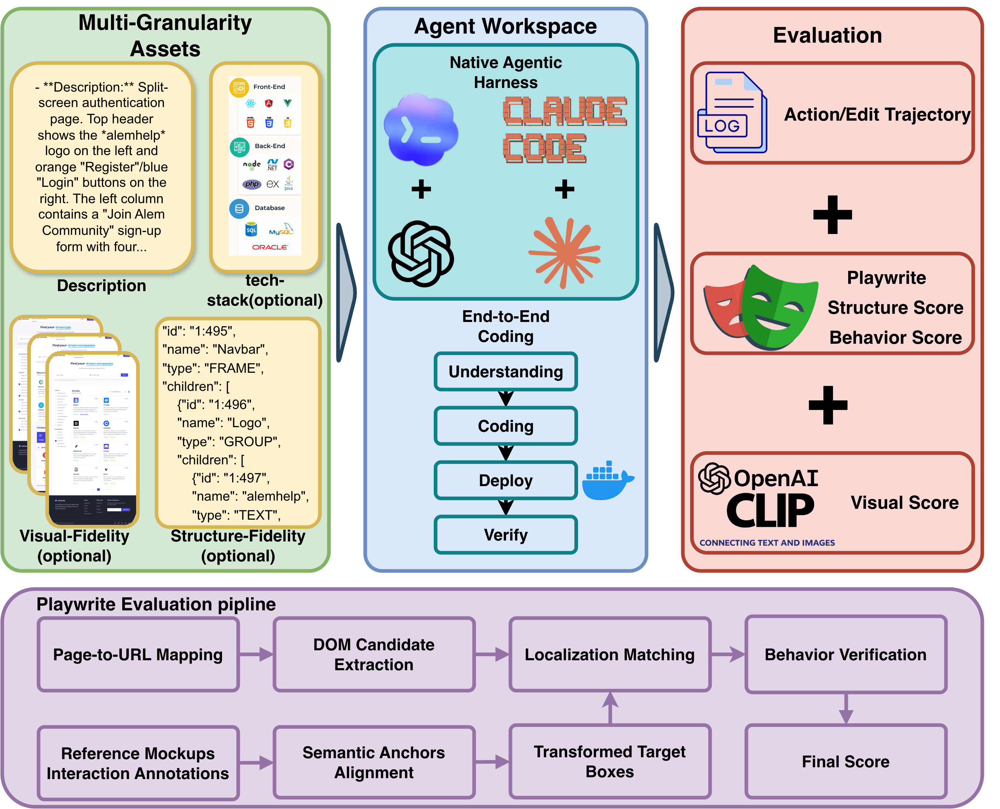
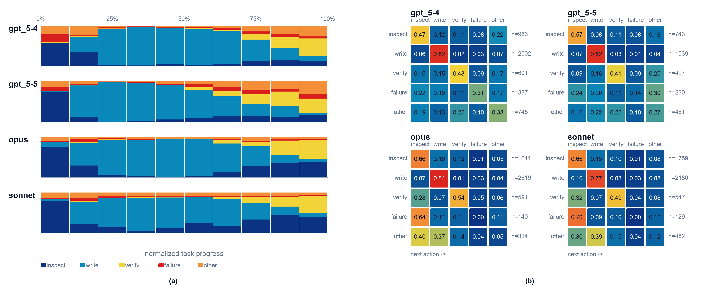
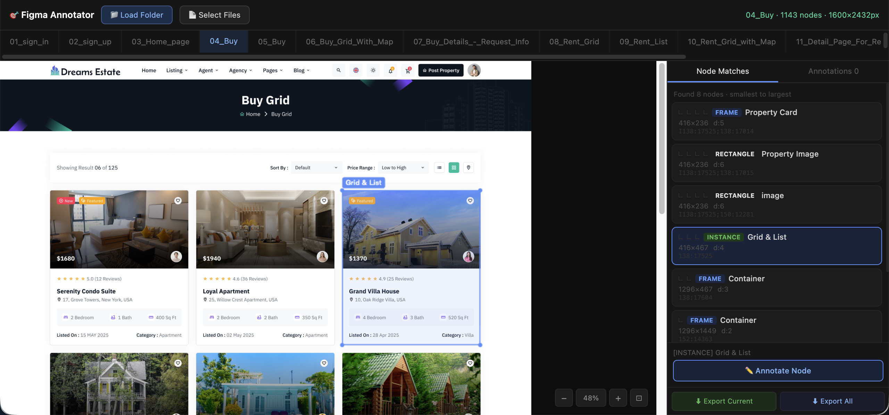
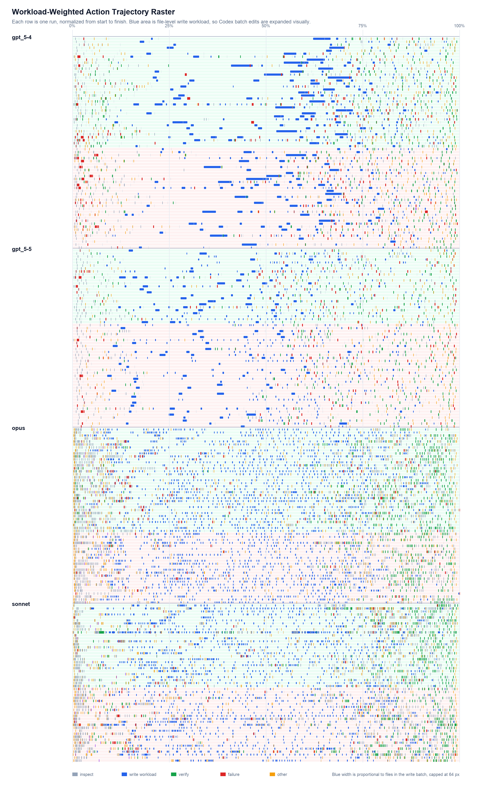

Abstract
We present VISTA (VIsual Spec-To-App Benchmark), a benchmark for evaluating the end-to-end web-app generation capabilities of LLM-based agents. Unlike prior code generation benchmarks that focus on algorithmic tasks, VISTA targets realistic UI-centric development, where agents must produce functional, visually coherent applications from underspecified inputs. We define five prompt-information conditions that vary along two axes — visual/structural fidelity and stack constraint.
Each page is manually annotated with interactive UI components and visual anchor points, addressing the limitations of script-based testing tools in open-ended code generation. Evaluation combines DOM-grounded reference matching, behavior-specific browser tests, and CLIP-based visual similarity. We use VISTA to assess four agent systems across two model families and two harnesses, finding that visual fidelity and functional correctness are partially decoupled, and that agent editing style varies sharply but is largely orthogonal to task quality.
At a glance
Categories span newsletter, real estate, job board, forum, travel booking, chat, cloud storage, e-commerce, project management, and music streaming — built from Figma designs rather than crawled production pages to reduce benchmark contamination.
Benchmark
Each task asks an agent to build and launch a multi-page web app. Conditions vary along two axes: visual/structural fidelity (text → screenshot → Figma JSON) and stack constraint (specified vs. agent-chosen).
Evaluation

Structure & function
A DOM-grounded evaluator aligns annotated reference targets with rendered DOM elements, scoring localization L and behavior B into a joint S = mean(L·B).
Visual fidelity
CLIP image similarity compares rendered screenshots against Figma-derived ground truth as a complementary page-level signal of design resemblance.
Trajectory & efficiency
Action traces and a Surgical Diff Score characterize editing style — localized patches vs. full-file rewrites — orthogonally to task success.
Results
We evaluate GPT-5.4 / GPT-5.5 (Codex harness) and Claude Sonnet / Claude Opus (Claude Code harness). Combined is the structure-function score S — the primary task-success metric.
Per-condition results
| Condition | Loc | Behavior | Combined | Comb. median | CLIP |
|---|---|---|---|---|---|
| C0 | 0.489 | 0.315 | 0.242 | 0.234 | — |
| C1 | 0.577 | 0.305 | 0.229 | 0.227 | 0.802 |
| C2 | 0.507 | 0.322 | 0.264 | 0.241 | 0.728 |
| C3 | 0.615 | 0.325 | 0.236 | 0.243 | 0.777 |
| C4 | 0.600 | 0.329 | 0.261 | 0.253 | 0.827 |
Per-model results
| Model | Loc | Behavior | Combined | Comb. median | CLIP |
|---|---|---|---|---|---|
| GPT-5.4(codex) | 0.543 | 0.330 | 0.251 | 0.229 | 0.818 |
| GPT-5.5(codex) | 0.602 | 0.283 | 0.223 | 0.227 | 0.853 |
| Opus 4.7(claude code) | 0.595 | 0.336 | 0.261 | 0.250 | 0.764 |
| Sonnet 4.6 (claude code) | 0.505 | 0.313 | 0.233 | 0.234 | 0.715 |
Condition C4 — per-model breakdown
| Model | Loc | Behavior | Combined | Comb. median | CLIP |
|---|---|---|---|---|---|
| GPT-5.4(codex) | 0.595 | 0.415 | 0.324 | 0.310 | — |
| GPT-5.5(codex) | 0.610 | 0.278 | 0.233 | 0.185 | — |
| Opus 4.7(claude code) | 0.618 | 0.303 | 0.246 | 0.228 | — |
| Opus 4.8(claude code) | 0.722 | 0.313 | 0.263 | 0.240 | — |
| Sonnet 4.6(claude code) | 0.577 | 0.315 | 0.237 | 0.237 | — |
Combined score across harness versions (C4)
Mean C4 combined score (n=10, failures scored 0) vs. agent harness version. Codex-CLI and Claude Code use independent version schemes, shown as separate panels. The middle column in each panel (Codex 0.128.0, Claude 2.1.126) is the original benchmark run. Newer harness lifts Sonnet 4.6 monotonically; for GPT-5.4 the 0.128 build is the high point.
Stack freedom matters more than richer input
Removing the stack constraint (C1→C2) yields the largest single jump in Combined (0.229→0.264). The richest input dominates only when paired with stack freedom.
Visual fidelity and functional correctness diverge
GPT-5.5 leads on localization and CLIP but trails on behavior; Opus shows the opposite — best behavior and best Combined, lower CLIP. The two should be reported separately.
Editing style is orthogonal to task quality
Opus has the highest Combined but the lowest Surgical Diff Score (rewrite-heavy); GPT-5.5 is the reverse. Correlation across runs is only ρ = −0.145.
Analysis

Appendix
Annotators worked in a custom web tool that loads a Figma-derived page on the left, the candidate
DOM tree on the right, and a labeling form below. For each page they marked every interactable
component and selected two to five visual anchors with stable identifiers such as
<search> or <checkout>, plus an interaction type
(navigation, input, toggle, external link, popout, or generic click).

For each transformed target box the evaluator selects the best DOM candidate via progressive matching — IoU first, then center-distance, then text-similarity fallback.
| Tier | Matching criterion | Localization score |
|---|---|---|
| 1 | IoU ≥ 0.30 | 1.00 |
| 2 | IoU ≥ 0.10 | 0.60 |
| 3 | Center distance ≤ 150 px | 0.30 |
| 4 | Center distance ≤ 600 px | 0.15 |
| 5 | Text similarity fallback | 0.10 |
| Miss | No candidate matched | 0.00 |
Within C1 each task is solved once per specified stack (pick A / B / C). Pick A is best on every metric, which justifies its reuse as the fixed template in C3.
| Pick | Loc | Behavior | Combined | Comb. median | CLIP |
|---|---|---|---|---|---|
| A | 0.622 | 0.317 | 0.240 | 0.254 | 0.823 |
| B | 0.546 | 0.287 | 0.212 | 0.196 | 0.818 |
| C | 0.562 | 0.310 | 0.236 | 0.246 | 0.762 |
Each file-mutating action is classified as a write, edit, or delete. The Surgical Diff Score is a convex combination of three normalized components — edit-event share A, diff-byte share B, and a targetedness term C — scaled to [0, 100]:
The Strict variant multiplicatively gates the other two components by the edit-event share, so an agent that rarely edits cannot earn a high score:
Both scores measure editing style, not task quality — across all runs the Surgical score correlates only weakly with Combined (ρ = −0.145; Strict ρ = −0.078).
| Model | Combined | Surgical | Strict | Edit share | Diff byte | Targetedness | Rewrite share |
|---|---|---|---|---|---|---|---|
| GPT-5.5 | 0.223 | 33.6 | 9.0 | 0.209 | 0.065 | 0.774 | 0.883 |
| GPT-5.4 | 0.251 | 30.4 | 7.8 | 0.203 | 0.058 | 0.683 | 0.926 |
| Sonnet | 0.233 | 28.1 | 4.7 | 0.111 | 0.018 | 0.771 | 0.982 |
| Opus | 0.261 | 22.4 | 2.7 | 0.071 | 0.012 | 0.639 | 0.988 |
Each row is one run; every action is a colored tick at its normalized progress point. Rows are grouped by model family and sorted within each family by score residual (green background: non-negative; red: negative). Blue write blocks are widened by the number of files touched, so Codex batch writes are not undercounted relative to Claude per-file writes.

Citation
@article{guo2026vista,
title = {VISTA: An End-to-End Benchmark for Visual
Spec-to-Web-App Coding Agents},
author = {Guo, JunJia and Yao, Yuhang and
Zhou, Jiawei and Chen, Jingdi},
year = {2026},
eprint = {2605.26144},
archivePrefix = {arXiv},
primaryClass = {cs.SE},
url = {https://arxiv.org/abs/2605.26144}
}
Resources: Paper · arxiv.org/abs/2605.26144 | Dataset · huggingface.co/datasets/JunJiaGuo/VIS-APP-Bench | Code · github.com/DouJiangTer/VISTA_Bench